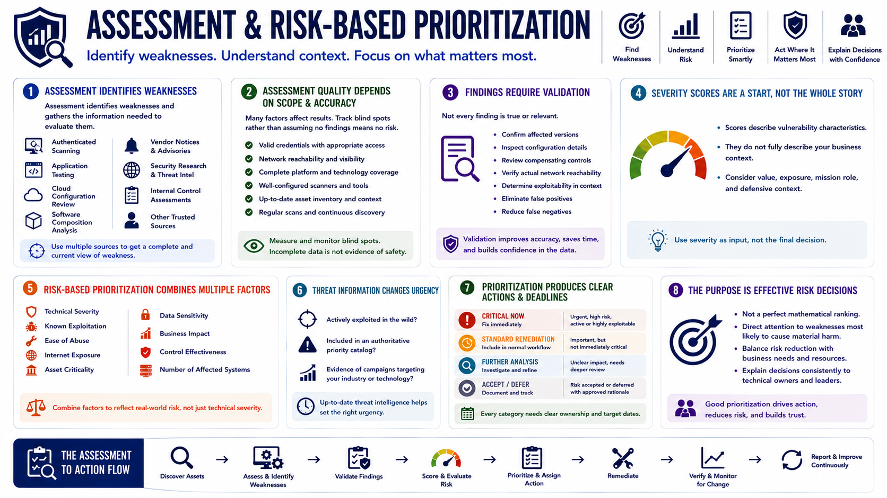

What Is Vulnerability Management?
Vulnerability Assessment and Prioritization
Connecting to LMS... Progress: in progress
Version 1.0 | Date: 2026-06-18 | Educational overview of vulnerability management concepts.

Narration
Assessment identifies weaknesses and gathers the information needed to evaluate them. Sources may include authenticated scanning, application testing, cloud configuration review, software composition analysis, vendor notices, security research, and internal control assessments.
Assessment quality depends on scope and accuracy. Credentials, network reachability, platform coverage, scanner configuration, and current asset data can all affect results. Programs should track blind spots rather than treating incomplete data as proof that no weakness exists.
Findings also require validation. False positives can waste effort, while false negatives can create misplaced confidence. Technical teams may need to confirm affected versions, inspect configuration, review compensating controls, or determine whether a component is actually reachable.
Severity scores are useful starting points, but they are not complete risk decisions. A score describes characteristics of a vulnerability; it does not fully describe the value, exposure, mission role, or defensive context of every affected asset.
Risk-based prioritization combines several factors: technical severity, known exploitation, ease of abuse, internet exposure, asset criticality, data sensitivity, business impact, control effectiveness, and the number of affected systems.
Threat information can change urgency. A weakness actively exploited in the wild or included in an authoritative priority catalog may require faster action than a similarly scored weakness with limited practical exposure.
Prioritization should produce clear action categories and deadlines. Teams need to know what is critical now, what should enter normal remediation work, what needs deeper analysis, and what can be accepted or deferred through an approved process.
The purpose is not to make a perfect mathematical ranking. It is to direct attention toward the weaknesses most likely to create material harm and to explain those decisions consistently to technical owners and leaders.